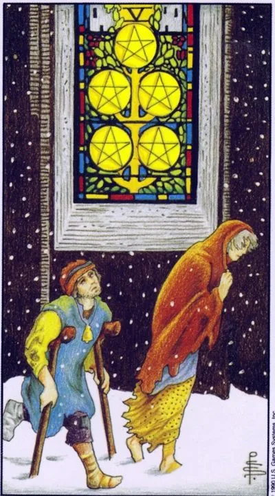

Младший аркан · Пентакли
VПятёрка пентаклей
Five of Pentacles
Полоса лишений: холод, нехватка и ощущение запертых дверей — хотя тёплое окно горит ближе, чем готов заметить отчаявшийся.
Архетип и основное значение
Двое бредут сквозь метель, один — на костылях, в лохмотьях. Мимо них, тёплое и золотое, светится витраж церковного окна, но они его не видят: головы опущены в снег. Пятёрка пентаклей — карта испытания ресурсами и верой: денег мало, здоровье подводит, поддержка кажется недоступной. Однако композиция упрямо повторяет: помощь находится в нескольких шагах.
Самое коварное в этой полосе — не бедность, а убеждение «никому до меня нет дела». Оно заставляет пройти мимо горящего окна: не позвонить другу, не обратиться в инстанцию, не попросить. Карта честна: период тяжёлый, притворяться иначе глупо. Но она столь же настойчива в другом — зима имеет календарный конец, а гордость не должна стоить дороже тепла.
В быту
Повседневность сжалась: пересчитываете мелочь до зарплаты, отказываетесь от встреч, потому что нечем угостить. Возможны коммунальные сюрпризы, поломка нужной вещи, штраф. Карта настойчиво советует принять доступную помощь — льготу, поддержку родни, предложение друга. Просить не стыдно; стыдно мёрзнуть из принципа.
Работа и карьера
Работа под угрозой: сокращение, задержки выплат, простой заказов — или поиск места затянулся до отчаяния. Рынок сейчас немилостив, и это не оценка ваших талантов. Рассмотрите временную подработку, смежную сферу, позицию ниже прежнего статуса: мост через зиму строят из досок, а не из амбиций. Витраж на карте — бывший коллега, готовый вас рекомендовать.
Отношения
Холод и одиночество: есть ли рядом человек или нет, ощущение одно — никто не согревает. Нехватка денег обнажает трещины пары — не давайте им стать пропастью. Не изолируйтесь из стыда за обстоятельства: разделённая трудность вдвое легче.
Здоровье
Здоровью не хватает элементарного: тепла, питания, вовремя взятого больничного. Хроническая болезнь обострилась, а лечение откладывается из-за денег или занятости — самая дорогая экономия из возможных. Витраж на карте — это ещё и врач, клиника, государственная программа: они существуют, найдите их раньше, чем организм выставит счёт сам.
Эзотерическое значение
Меркурий в зимнем Тельце — ум в материальном тупике. Традиция звала это духовной бедностью: внешнее оскудение как сигнал отрезанности от источника. Молитва, посильная милостыня, свеча восстанавливают связь. Дверь открыта всегда — закрытой её делает опущенная голова.
Мороз отпускает: полоса лишений ломается, двери, казавшиеся прибитыми, поддаются — началось возвращение к теплу.
Архетип и основное значение
Снег всё ещё кружит, но герои подняли головы и увидели окно. Перевёрнутая пятёрка — начало выхода из кризиса: возвращаются деньги, находится работа, тело начинает слушаться, люди отвечают. Карта подчёркивает механизм перемен: они стартуют с малого жеста — принятой помощи, первого звонка, согласия взять предложенную руку.
В запасе у неё и предупреждение: привычка к выживанию живёт дольше самой нужды. Человек продолжает экономить на еде при полном холодильнике и ждать подвоха от доброты. Зима научила не верить теплу — но учиться ему снова тоже приходится. Если же голова так и осталась опущенной, если гордость запрещает «светиться лицом», изоляция продолжится уже по собственному выбору.
В быту
Быт выравнивается: закрывается старый долг, приходит компенсация, нужная вещь неожиданно дешевеет, близкие помогают деньгами и руками. Хорошее время составить план восстановления — погасить обязательства по порядку, собрать подушку безопасности. И позвольте себе маленькую радость после периода отказов: символическое «первое тепло» закрепляет поворот.
Работа и карьера
На профессиональном фронте прорыв: предложение после долгого поиска, возврат на прежнее место, оплата зависшего счёта. Должники начинают возвращать, клиенты оживают. Закрепите успех: обновите резюме, зафиксируйте договорённости письменно, поблагодарите помогавших — связи, согретые в кризис, самые прочные.
Отношения
Отношения оттаивают: после ссоры и молчания приходит разговор, после отчуждения — нежность. Кто-то первым протягивает руку, и это может быть партнёр, а можете быть вы. Для одиноких — конец внутренней заморозки, желание снова подпускать людей. Осторожнее с прошлым: возвращение старых отношений требует проверки, изменилось ли хоть что-то, кроме погоды.
Здоровье
Начинается выздоровление: лечение подобрано, организм отвечает улучшением, силы прибывают понемногу. Благоприятный период для реабилитации и мягкого возвращения к активности без рекордов. Главное — довести курс до конца и не записывать себя в выздоровевшие раньше времени: оттепель — ещё не весна.
Эзотерическое значение
Обратная пятёрка — восстановление связи: практики благодарности, возобновление обмена с миром, маленькие регулярные подношения вместо больших разовых. В родовых ритуалах карту используют для завершения программы лишений — символически снять последнюю одежду бедности. Традиционный совет мистиков: войдя в тепло, оглянись и укажи на него следующему мёрзнущему.
🌿 Как школа читает этот ранг
Основная идея
Движение ресурсов. Для земли перемены болезненны, поэтому вложение сначала выглядит риском.
Как проявляется
В деньгах — разумные траты ради будущего результата. В отношениях — выход из безопасного кокона в новый уровень ответственности. Важно сохранять резерв, но не превращать страх потери в неподвижность.
Теневая сторона
Страх потери блокирует любые вложения и постепенно создаёт настоящий дефицит.
Ключевые слова
вложение · ресурсы · риск · страх потери · будущее
📜 Развёрнуто — из лекции по рангу
Суть карты
Традиционно «нищая карта», у школой — карта движения ресурсов: стихия земли = здоровье, сексуальные отношения, собственность, деньги как «физическое выражение затраченной энергии», опыт и навыки.
Прямое положение
- Смысл карты — движение: двое идут мимо освещённого окна храма, «могут зайти, обогреться — но проходят мимо возможности, потому что не видят всей ситуации».
- Канон: чтобы заработать, сначала потрать («валенки» → «валенки со стразами от Swarovski вдвое дороже»); вклад страшен («а вдруг народ не купит»), но «деньги любят счёт, любят рост, любят движение». На шестёрке прибыль приходит уже без страха.
- Прямая: разумные траты времени, сил, здоровья и денег с расчётом на будущее, всегда с суммой «на крайний случай, чтобы не пойти по миру»; плюс «в здоровом теле здоровый дух» — чисто материальные «потеряют и деньги, и здоровье, и время».
- Отношения: признание и брак — выход из кокона четвёрки («страшновато замуж по пятёрке: вкладываешь в мужа силы, надежды, приданое»). Ревность — страдание от утраты обладания: «она больше не моя женщина, раз смотрит на других». Образ: четвёрка — машина уверенно на четырёх колёсах, пятёрка — «мотор, куда постоянно нужно вкидывать деньги, чтобы она поехала»; жизнь требует «правильного питания» и поддержания формы.
Негативное значение
• неразумные траты, «минус, из которого не выберешься», нищета; карта «перенасыщена страхом потерять деньги» — Уэйт «сгустил краски»; пентакли «видят прошлое, а не будущее», тратить под будущую прибыль им «очень рискованное ощущение».
Акценты и фишки школы
- Уэйт сознательно сделал пятёрки мрачными ради эмоциональной окраски, но местами «радикально перегнул»/«сгустил краски» — прежде всего пятёрки пентаклей и кубков; на практике карты отыгрываются мягче.
- Детали рисунка = смысл: окно храма — возможность; кровь и вода — страдания Христовы; рваные облака и развевающиеся волосы — движение воздуха; у бойцов разная одежда — «они от разных домов, каждый защищает свой интерес».
- Славянско-советский ряд: соцсоревнования, инженерные 120 рублей, валенки, шуба соседки из чернобурки, «с милым рай и в шалаше».
- Четыре стихии через «Буратино»: Арлекин — огонь, Пьеро — вода, Артемон — мечи/защитник, Мальвина — земля/прагматичная учительница; Буратино — человек, объединяющий все стихии.
- Типология мужчин по мастям (ревность): жезловый любит спарринг, мечи отвечают «прямой войной», кубковый страдает, «папин-сынок» уходит от соревнований.
- Методика: карта дня как задание ученикам; без сигнификаторов («12 знаков зодиака глубже четырёх королев»); преобладание мастей в раскладе — психотип; интуиция выше логики (Юрия Хана рекомендует лишь логикам): «карты нельзя проверить и перепроверить — можно только почувствовать».
Ключевые слова
разумные траты, вложение и рост денег, страх перемен, «по миру пойти», движение ресурсов.